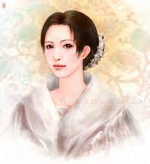
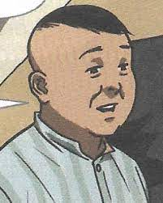
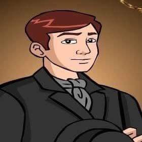
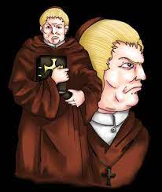
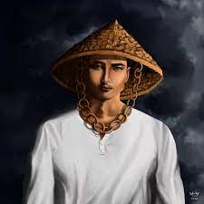

Characters in Noli Me Tangere
Maria Clara
 |
Maria Clara is the childhood sweet heart of the main charracter in Noli Me Tangere, also known as, the novel's protagonist, Crisostomo Ibarra. Maria Clasa is also known as "purity and innocence of a protected local (Filipino) woman during the Spanish captivity." As Rizal imagined her. Maria Clara was also blackmailed by Padrio Salvi.
Capitan Tiago
 |
Capitan Tiago is known as "Maria Clara's Father." He is also known as a powerful business man. Capitan Tiago was struggling to fulfill the fariars will when he married his daughter to Crisistomo Ibarra.
Crisostomo Ibarra
 |
Crisostomo is the main character in Noli Me Tangere. He's known as the mirror of Jose Rizal. Crisostomo Ibarra was an earnest and idealistic man in a young age, a lot people admired him during his days.
Padre Damaso
 |
Padre Damaso was making vague wipes at Crisostomo Ibara. Padre Damaso was also known for being kind to the Ibarra family.
Elias
 |
Elias is a mysterious person and was known as a man who wears "Salakot" where he hides his facial features. Elias was also known as the guy who helped Crisostomo Ibarra to escape.